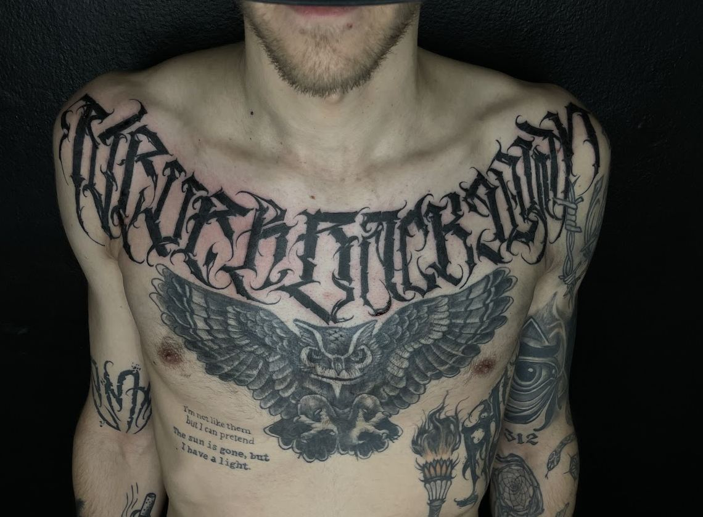
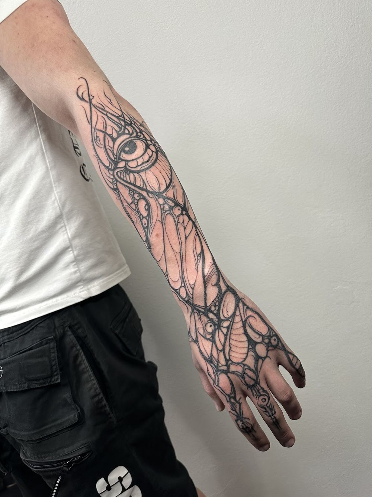
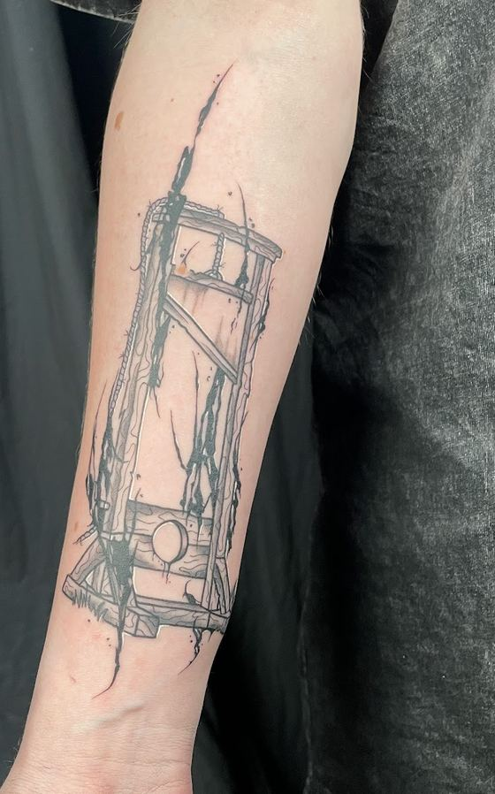
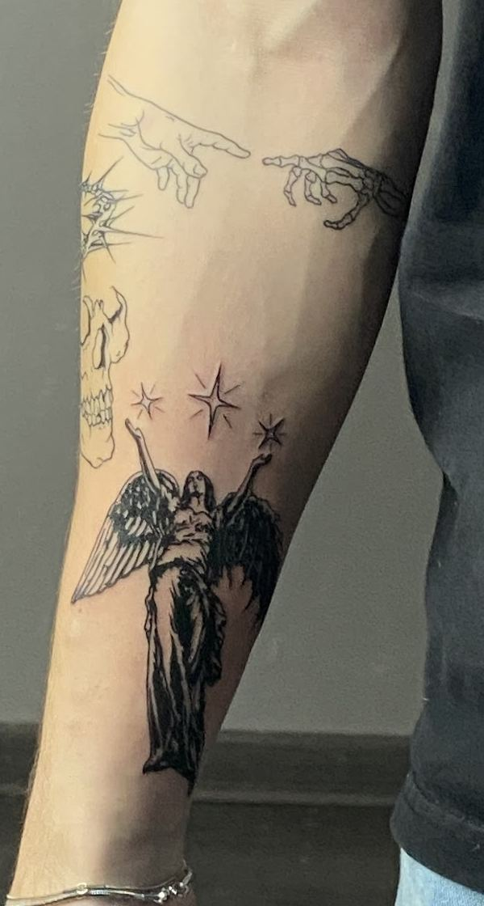
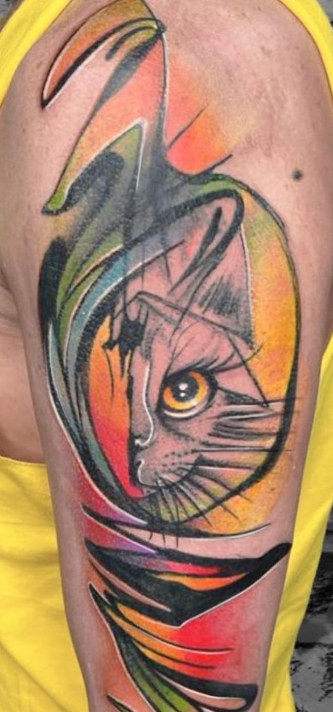
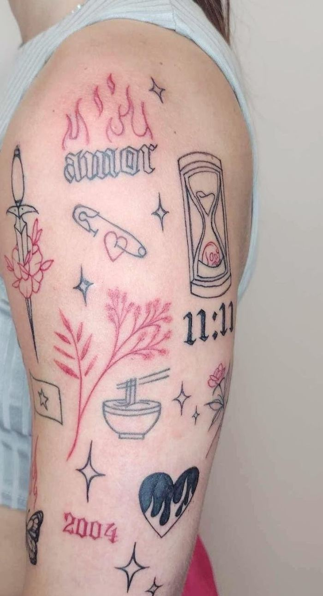
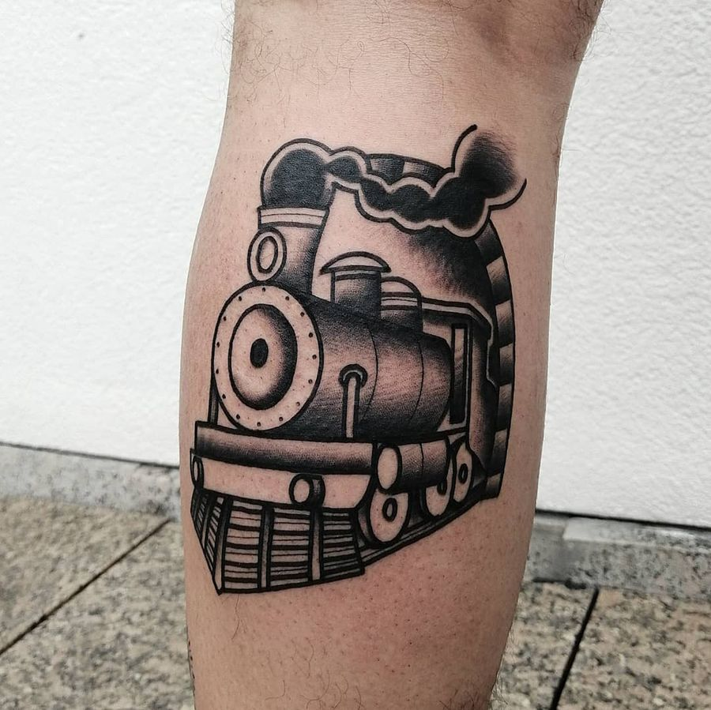
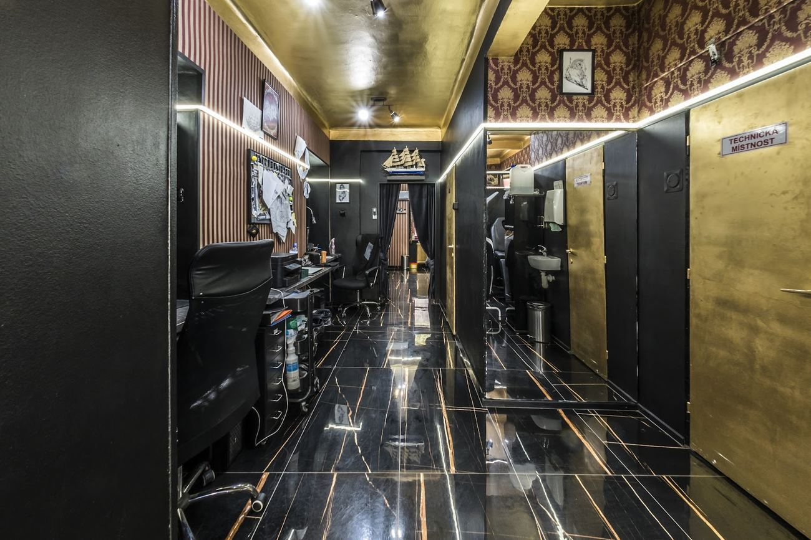

Needle Tattoo
Tetovací studio v Žižkově, Hartigova 60. Od jemné linky po blackwork.
4,9 z 274 hodnocení na Googlu
Jen na objednání.







„Profesionální přístup, velmi čisté prostředí a kvalitně odvedená práce. Pokud chcete kvalitu, promyšlené detaily a poradenství na úrovni, určitě doporučuji.“
Zuzana, před čtyřmi měsíci, Google
Co o studiu píšou
„Byl jsem tu na tetování už podruhé a můžu říct, že je to na vysoké úrovni. Pan Adam je velmi komunikativní, profesionální a hlavně vyjde vstříc všemu. Už bych neměnil!“
Tomas, před dvěma měsíci, Google
„Individuální přístup, pěkné nové studio, krásná precizní práce.“
Piotrusia, před dvěma měsíci, Google
„Děkuji za dnešní tetování, naprostá spokojenost.“
Jana, před čtyřmi měsíci, Google
Než přijdete
Do studia se chodí na objednání. Zavolejte a řekněte, co máte v hlavě.
Jak to tady chodí, popsali zákazníci na Googlu: návrh je hotový během pár minut, nabídnou kafe nebo Red Bull a poradí s umístěním i s hojením. Jedno sezení může trvat i čtyři a půl hodiny.
Platba kartou. Bezbariérový vstup i parkování. Wi-Fi zdarma.
„Musím říct, že tohle je tak příjemný místo, že bych tu mohla být celý den a každý den.“ Pavlína, před deseti měsíci, Google
